About Aarti
Humans of Aarti
"People think boys are valuable but girls are not.
We want to change that."
Leadership
Board of Directors
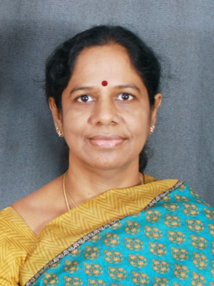
Ms. Sandhya Puchalapalli
Founder and driving force of Aarti For Girls, Sandhya began the organisation in 1992 after rescuing a 2-year-old abandoned girl on a Kadapa street. Over three decades she has grown Aarti into a home for hundreds of girls and women, and a model of compassionate, community-led change.
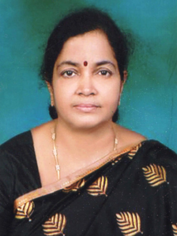
Ms. Durga Kumari
Ms. Durga Kumari serves as Secretary of the Vijay Foundation Trust Association and has been central to Aarti's governance and daily operations for many years. Her administrative dedication ensures that programmes run smoothly and resources reach those who need them most.
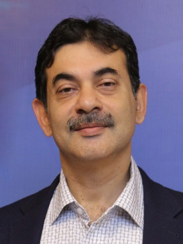
Mr. Jayesh Ranjan
A former Principal Secretary to the Government of Telangana, Mr. Jayesh Ranjan brings decades of public-policy expertise to the board. He has championed social development and women's empowerment initiatives at state and national level.
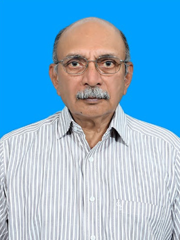
Mr. R. Shivananda Reddy
A respected leader from Andhra Pradesh, Mr. Shivananda Reddy contributes deep knowledge of rural welfare and grass-roots development to Aarti's board, helping to ensure programmes genuinely reach the communities they serve.
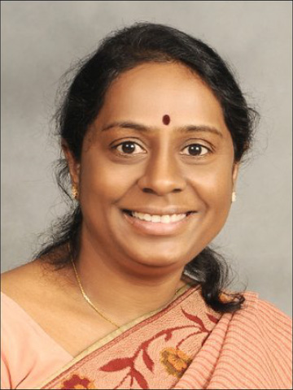
Dr. T. Vindhya
Professor of Psychology and a leading scholar on gender, trauma, and women's empowerment, Dr. Vindhya's academic expertise directly shapes Aarti's holistic approach to care and the psychological support offered to residents.
Ms. Shyamala Rajaram
Ms. Shyamala Rajaram brings expertise in social work and community development to the board. Her experience working with marginalised communities across India has been invaluable in designing Aarti's outreach and follow-up programmes.
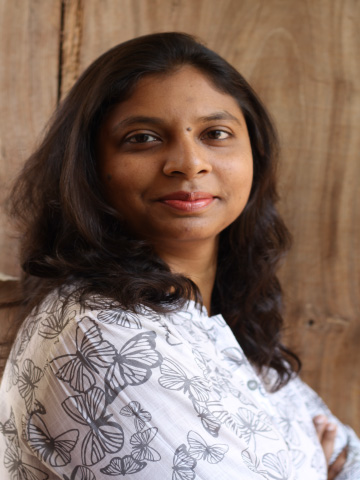
Ms. Swati Puchalapalli
Ms. Swati Puchalapalli has been instrumental in strategic planning and stakeholder outreach for Aarti For Girls. Her commitment spans years of professional and voluntary work in support of the organisation's mission.
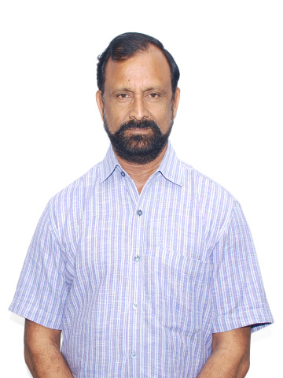
Mr. G. Vijayabhaskar Reddy
Mr. Vijayabhaskar Reddy lends his business and community-leadership experience to guide Aarti's financial strategy and long-term sustainability planning, helping the organisation grow its impact responsibly.
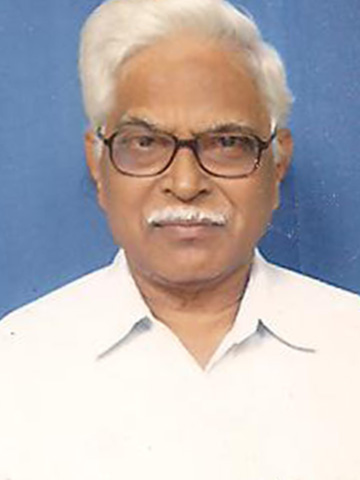
Dr. P. Bali Reddy
A distinguished physician and community health advocate, Dr. P. Bali Reddy ensures that Aarti's healthcare programmes meet rigorous standards. His medical guidance shapes the health and wellness support offered to girls and women in care.

Mr. Umamaheswar Reddy
Mr. Umamaheswar Reddy is a committed member of the India Board whose professional experience and community networks strengthen Aarti's governance and its connections with the local community in Andhra Pradesh.
United States
USA Board of Directors

Ms. Preeti Hari Nandanar
Ms. Preeti Hari Nandanar leads Aarti For Girls USA as CEO, directing fundraising and awareness efforts across the United States. She is passionate about connecting the Indian-American diaspora to meaningful, measurable social impact in India.
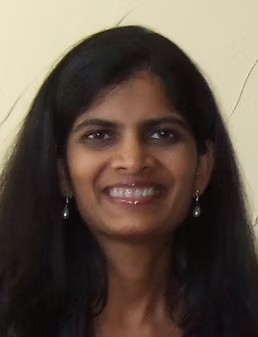
Ms. Deepthi Sigireddi
Ms. Deepthi Sigireddi is a Senior Technologist who brings Silicon Valley expertise to Aarti's digital strategy and technology infrastructure. She has championed the organisation's cause in the US tech community for many years.
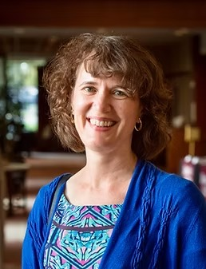
Ms. Bonnie Sue Zare
Ms. Bonnie Sue Zare is a Professor specialising in international development and gender studies. Her academic research and fieldwork enrich Aarti's programme design and provide a rigorous framework for measuring impact.
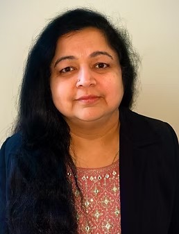
Ms. Sridevi Joshi
Ms. Sridevi Joshi is a software engineer who contributes technical expertise to Aarti's digital operations and outreach. She is committed to leveraging technology to amplify the organisation's mission.
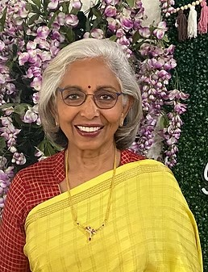
Ms. Subhashini Boyareddigari
Ms. Subhashini Boyareddigari is a community leader and fundraiser who has built strong bridges between the Telugu diaspora and Aarti For Girls. Her tireless advocacy has raised critical resources and awareness across the US.
Mr. Obul Kambham
Mr. Obul Kambham is a technologist and entrepreneur who brings an entrepreneurial mindset to scaling Aarti's impact. He supports the USA chapter with strategic insights, networks, and a passion for community-driven change.

Roopa Reddy
Roopa Reddy is a valued member of the USA Board of Directors, contributing her expertise and networks to strengthen Aarti's fundraising campaigns and diaspora engagement in the United States.
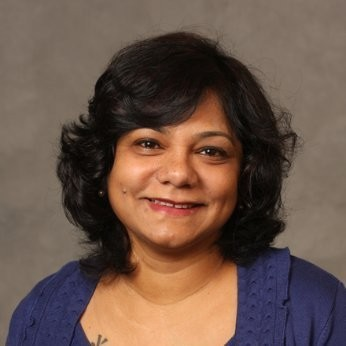
Shalini Puchalapalli
Shalini Puchalapalli represents a family commitment to Aarti's mission, supporting the organisation through community engagement, fundraising, and advocacy that inspires others to contribute to Aarti's transformative work.
Our People
Meet Our Awesome Team
The superstars behind Aarti's day-to-day functioning!
Rajeev Vartak
Rajeev oversees the design and delivery of Aarti's core programmes, ensuring that every girl in care receives education, health support, and life-skills training that sets her up for a successful future.
Indumathi Ravishankar
Indumathi leads Aarti's social work team, managing intake, counselling referrals, and family reintegration efforts. Her empathetic approach ensures every resident feels heard, safe, and supported.
Prabhu Podipireddy
Prabhu keeps Aarti's day-to-day operations running efficiently, from facilities management and logistics to vendor coordination and compliance — the backbone that lets the mission run without interruption.
Aruna Reddy
Aruna coordinates the care teams across Aarti's residential homes, ensuring that every child's daily needs — physical, emotional, and educational — are met with warmth and consistency.
Bhagyamma Mure
Bhagyamma provides individual and group counselling to Aarti's residents, helping girls and women process trauma, build resilience, and develop the confidence to shape their own futures.
Amrita Kumar
Amrita manages Aarti's partnerships with schools and colleges, tracks academic progress for every resident, and runs tutoring programmes that have helped hundreds of girls access higher education.
Sunilkanth Rachamadugu
Sunilkanth manages Aarti's digital infrastructure and administrative systems, ensuring that records, communications, and data are handled securely and efficiently across all of Aarti's locations.
Kabir Ahmed
Kabir is Aarti's eyes and ears on the ground, conducting community outreach, identifying girls in need of intervention, and maintaining relationships with local officials and partner organisations.
Sree Vani
Sree Vani connects Aarti with families, community groups, and local leaders in Kadapa and surrounding districts, building the trust and awareness that brings more girls and women into Aarti's care.
Sree Latha
Sree Latha provides essential support across Aarti's programmes, coordinating events, maintaining records, and ensuring that every initiative is delivered on time and with the care it deserves.
Varuna Law Associates
Varuna Law Associates provides Aarti For Girls with expert legal counsel, supporting the organisation on child rights, compliance, contractual matters, and legal advocacy on behalf of the girls and women in its care.
Terra Viridis
Terra Viridis partners with Aarti to bring sustainable environmental practices to Aarti Village, supporting the campus's green infrastructure and helping residents learn about ecology, sustainability, and environmental stewardship.
Advisory
Pillars of Aarti
Distinguished individuals whose guidance and support have shaped the direction of Aarti For Girls.
Mr. K. Jayabharatha Reddy
A distinguished IAS officer with an extensive career in public administration, Mr. Jayabharatha Reddy has provided Aarti with strategic guidance rooted in decades of experience in governance, policy, and social development across Andhra Pradesh.
Mr. A. N. Tiwari
Mr. A. N. Tiwari is a senior IAS officer whose counsel on administrative matters has been invaluable to Aarti For Girls. His experience spanning decades of public service at state and national level informs the organisation's governance and compliance approach.
Mr. Kanchi V. Rama Moorthy
Mr. Kanchi V. Rama Moorthy has provided steadfast guidance to Aarti For Girls, drawing on his experience in community leadership and social development. His counsel has helped Aarti deepen its roots and widen its reach in Andhra Pradesh.
Mr. T. Mallikarjuna Reddy
Mr. T. Mallikarjuna Reddy's expertise in regional governance and community welfare has informed Aarti's programme design and strengthened the organisation's relationships with local government institutions in Y.S.R. District.
Mr. G. R. Reddy
A senior Indian Revenue Service officer, Mr. G. R. Reddy has supported Aarti For Girls with expert financial and regulatory guidance over the years, helping to ensure the organisation's fiscal integrity and long-term sustainability.
Dr. Puchalapalli Sreenivasulu Reddy
A distinguished physician and academic, Dr. Puchalapalli Sreenivasulu Reddy's medical expertise and community standing have provided important support to Aarti's healthcare and wellbeing initiatives across its residential and outreach programmes.
"Our volunteers are always a part of the Aarti family."
Join the hundreds of people from around the world who have given their time and skills to Aarti's mission.
Become a Volunteer